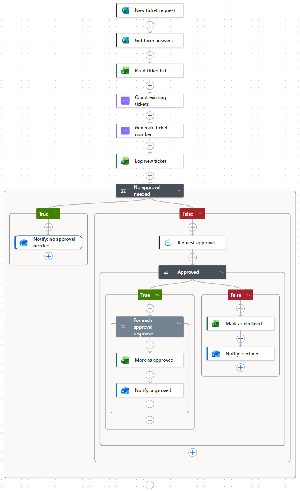
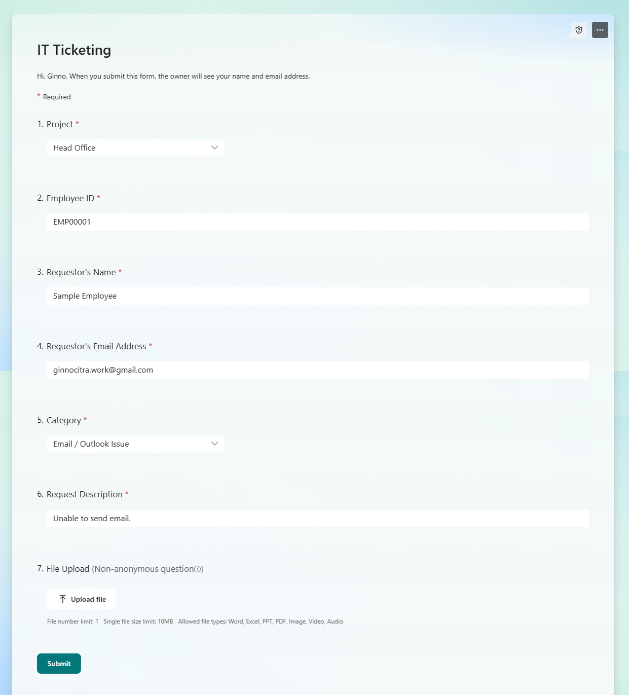
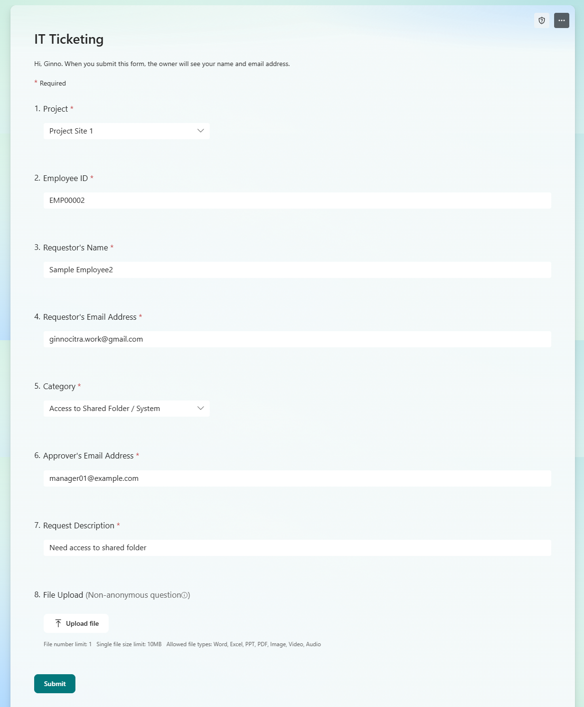
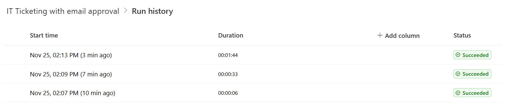

Approval only when the category needs it
Requests that don't need approval go straight through, and only the categories that do are sent to an approver.
A Power Automate flow that turns a Microsoft Forms request into a numbered ticket, asks for approval when the category needs it, and tells the requester the outcome.
Some categories of IT request need an approver's go-ahead before work can start. This flow records every request, asks for approval only when the category requires it, and tells the requester the result, so nobody has to follow up by hand.

The whole flow, from the form submission to the approved and declined outcomes. Click the image to see it full size.
Requesters fill in a Microsoft Forms request. When the category needs approval, an extra question asks for the approver's email address. Every ticket is then logged in an Excel table.

No approval needed: the form goes straight from the category to the request description.

Approval needed: an extra question asks for the approver's email address.

The ticket log with sample data: each row gets a ticket number and a status of Pending, Approved or Declined.
Each outcome has its own email, filled in with the project, category and request description from the form.

No approval needed: a confirmation that the request was received.

Approved: the requester is told the request was approved and work will start.

Declined: the requester is told the request was not approved and who to follow up with.
I tested every path: no approval needed, approved and declined.

Run history showing successful runs.
Each decision below answers a real question about how requests should be handled.
Requests that don't need approval go straight through, and only the categories that do are sent to an approver.
The form branches by category and asks for the approver's email address only when approval is needed, so requesters aren't asked for details that don't apply to them.
Each ticket gets the next number in sequence, based on the tickets already logged in Excel, so every request has its own reference.
Approved and declined requests both update the Excel row and send an email, so the sheet matches what happened and the requester is never left waiting. The IT team isn't the approver, so the decline email sends questions about the decision to the approver.